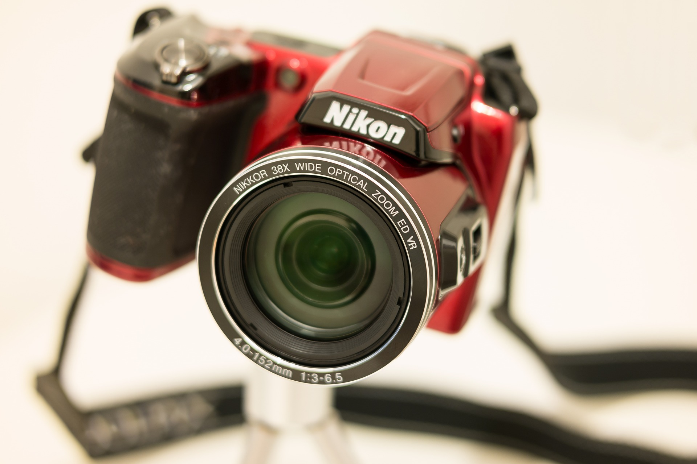
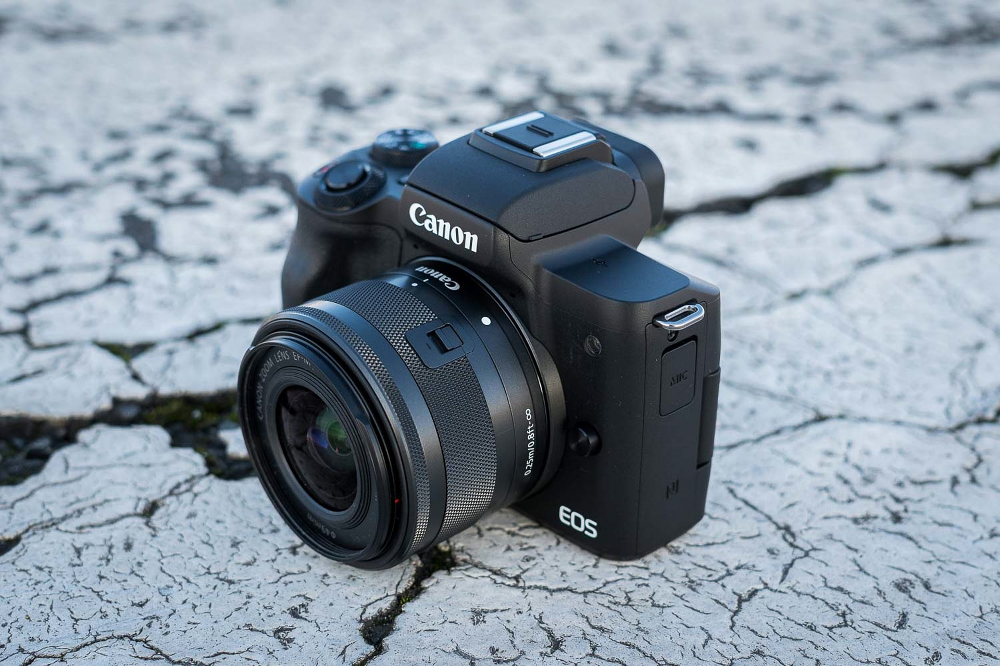

Kapitel 01 - Kamera-Typen
Was macht eine Kamera aus?
Kamera ist nicht gleich Kamera. Über die Jahre haben sich viele verschiedene Kameratypen durchgesetzt für verschiedene Einsatzmöglichkeiten die ihre eigenen Vor- und Nachteile mit sich bringen. In diesem Kapitel wollen wir uns die bekanntesten anschauen und diese näher beleuchten.
Analog vs. Digital
Heutzutage sind klar Digitalkameras der Stand der Technik und Analogkameras gehören der Vergangenheit an. Doch der Vollständigkeit halber soll hier trotzdem kurz der wesentliche Unterschied zwischen analogen und digitalen Kameras erklärt werden.
Bevor die ersten Digitalkameras in den 1990er Jahren die breite Masse erreichten, gab es für Fotografen keinen Weg um eine analoge Kamera herum. Zum Speichern der Bilder dient ein Film, eine spezielle Folie, die aufgerollt und in die Kamera eingesetzt wird. Das Bild entsteht dabei durch Projektion des Aufnahmeobjekts mittels eines optischen Systems auf den Film. Der große Nachteil dabei? Man sieht seine geschossenen Bilder nicht sofort, sondern muss diese erst einmal im Fotolabor entwickeln lassen. Außerdem ist die Kapazität stark beschränkt. Herkömmliche Filme bieten in der Regel Platz für 24-36 Aufnahmen. Was für viele ein großer Nachteil ist, macht für einige aber gerade den Charme von Analogkameras aus. Man muss sich genau überlegen, was man wie ablichten möchte und es entsteht ein einzigartiger Vintage Look.
Digitalkameras hingegen sind mit Bildsensoren ausgestattet, die das Bild digitalisieren. Die Aufnahmen werden direkt in einem Speichermedium, wie zum Beispiel einer SD-Karte, abgespeichert. Hier kann man wie gewohnt sofort seine Aufnahmen begutachten und Tausende Fotos schießen, bis die Speicherkarte voll ist. Ein weiter Vorteil ist die Möglichkeit der digitalen Nachbearbeitung der Bilder. Im Folgenden schauen wir uns die gängigsten Typen von digitalen Kameras an.
Kompaktkameras
Kompaktkameras sind wie der Name schon sagt besonders klein und leicht. Sie zeichnen sich durch eine benutzerfreundliche Bedienung aus und erfordern wenig technisches Hintergrundwissen. Dies geht auf Kosten des Funktionsumfangs und der Komponenten. Deswegen liefern Kompaktkameras oft eine schlechtere Bildqualität als anderen Kameratypen. Auch die fest verbauten Objektive sind eine deutliche Einschränkung. Dafür sind sie auch besonders günstig im Einkauf. Diese Kameras eignen sich gerade aufgrund ihres Formfaktors am ehesten für Reisen und für Schnappschüsse im Alltag.

Bridge Kameras
Bridge Kameras bilden die Brücke zwischen Kompaktkameras und Spiegelreflexkameras. Sie bieten mehr Funktionen als Kompaktkameras und haben oft ein festverbautes Zoomobjektiv mit einem sehr großen Brennweitenbereich (Was die Brennweite ist, werden wir noch in einem der nächsten Kapitel klären). Sie sind ein guter Einstieg in die Fotografie, wenn das Budget knapp ist, gleichzeitig aber ein sehr großer Anwendungsbereich abgedeckt werden soll.
DSLR
Wer keine Kompromisse machen möchte, greift zur Spiegelreflexkamera. Durch die Möglichkeit, das Objektiv auswechseln zu können, kann eine DSLR für nahezu jede Situation eingesetzt werden. Die optische Qualität der Objektive ist oft überragend, und das umfangreiche Zubehör macht diesen Kameratyp besonders vielseitig. Ein weiterer Vorteil ist der optische Sucher, der das Motiv ohne Verzögerung direkt durch das Objektiv zeigt – ein entscheidender Vorteil bei schnellen oder dynamischen Szenen.
Doch diese Vielseitigkeit hat ihren Preis. DSLRs sind meist deutlich größer und schwerer als andere Kameras und erfordern ein gewisses technisches Verständnis, um das volle Potenzial auszuschöpfen. Auch der mechanische Spiegel, der für den optischen Sucher notwendig ist, macht die Kameras anfälliger für Verschleiß und Geräusche während der Aufnahme. Dennoch bleiben DSLRs für viele professionelle Fotografen und ambitionierte Amateure die erste Wahl, wenn es um Kontrolle, Qualität und Zuverlässigkeit geht.

DSLM
Die spiegellose Kamera ist die moderne Antwort auf die DSLR. Sie verzichtet auf den mechanischen Spiegel und den optischen Sucher und setzt stattdessen auf einen elektronischen Sucher oder das Display. Diese Bauweise ermöglicht ein kompakteres und leichteres Design, ohne die Möglichkeit des Objektivwechsels aufzugeben – ein großer Vorteil gegenüber Kompakt- oder Bridgekameras.
Dank ihrer fortschrittlichen Technik bieten Systemkameras eine beeindruckende Bildqualität, die oft mit DSLRs mithalten kann oder diese sogar übertrifft. Besonders bei Videoaufnahmen haben spiegellose Kameras meist die Nase vorn, da sie durch den elektronischen Sucher nahtlos zwischen Foto- und Videomodus wechseln können. Zudem punkten sie mit innovativen Funktionen wie Echtzeit-Autofokus, Gesichtserkennung und Fokus-Peaking.
Ein Nachteil kann jedoch die Akkulaufzeit sein, da der elektronische Sucher und das Display mehr Energie verbrauchen. Auch das Angebot an Zubehör und Objektiven ist bei einigen Herstellern noch nicht so umfangreich wie bei DSLRs. Dennoch erfreuen sich Systemkameras immer größerer Beliebtheit und sind eine hervorragende Wahl für Fotografen, die auf modernste Technik und Flexibilität setzen, ohne dabei auf Mobilität verzichten zu wollen.
Zusammenfassung
In diesem Kapitel haben wir die wichtigsten Kameratypen und ihre Besonderheiten kennengelernt. Während analoge Kameras heute eher aus nostalgischen Gründen genutzt werden, dominieren digitale Kameras den Markt. Kompaktkameras überzeugen durch ihre einfache Handhabung und Mobilität, Bridge-Kameras bieten eine gute Balance zwischen Vielseitigkeit und Preis, und DSLRs sind die erste Wahl für höchste Ansprüche an Bildqualität und Kontrolle. Spiegellose Systemkameras kombinieren modernste Technik mit Flexibilität und Mobilität und stellen eine zukunftsweisende Alternative zur klassischen Spiegelreflexkamera dar. Welcher Kameratyp für dich der richtige ist, hängt von deinen individuellen Bedürfnissen, Vorlieben und Einsatzbereichen ab.
Eigene Meinung
Wer Fotografie als ernsthaftes Hobby betreiben möchte, sollte zu einer klassischen Spiegelreflexkamera (DSLR) oder einer spiegellosen Systemkamera greifen. Der große Funktionsumfang und die Möglichkeit, Objektive wechseln zu können, bieten einen spürbaren Mehrwert gegenüber anderen Kameratypen. Für den Einstieg empfehle ich eine hochwertige DSLR aus den letzten 10 Jahren, die auf dem Gebrauchtmarkt erhältlich ist. Spiegellose Kameras sind zwar technisch fortschrittlicher, allerdings auch teurer, da dieser Kameratyp erst seit wenigen Jahren marktreif geworden ist. Die großen Hersteller setzen jedoch zunehmend auf diese Technologie, sodass in Zukunft ein breiteres Produktangebot und sinkende Preise zu erwarten sind.